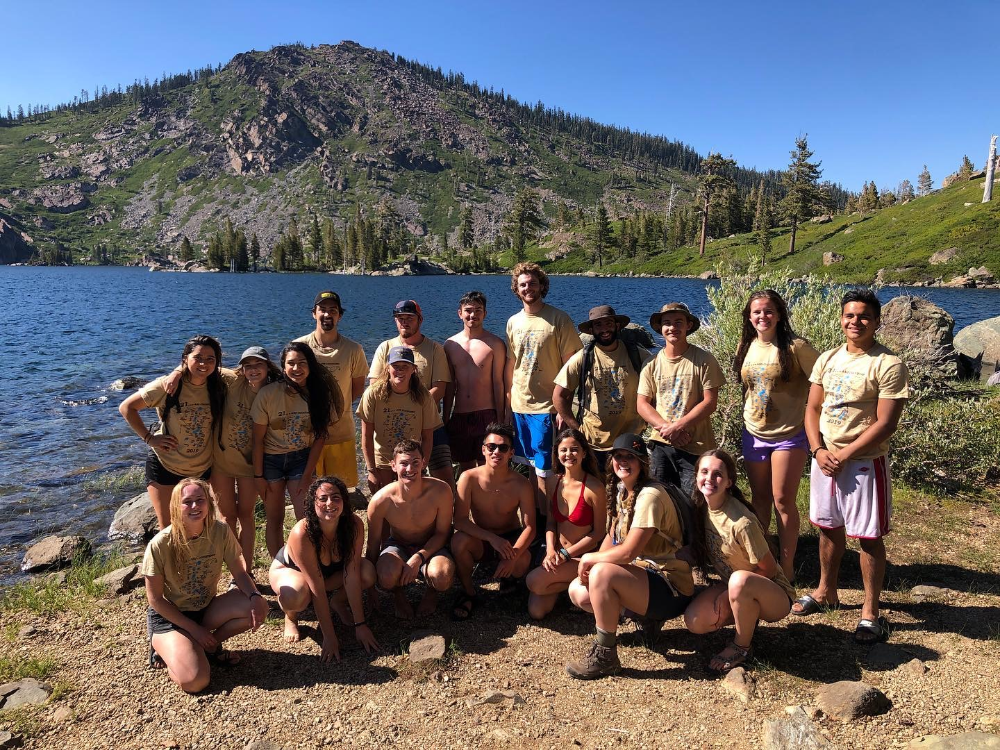

Annual Lakes Hike
What?
Swimming in 21 lakes in one day.
When?
Saturday, July 23rd, 2022 (tentative)
Where?
Lakes Basin: Plumas and Sierra Counties
Cost?
$35: Pays for breakfast at The Outpost, Dinner back in Clio, and an awesome T-shirt!
Sign Up!
(Will be available as we near the event)
More Info:
Timeline:
Friday the 22nd: head up and stay the night. (Bring your own sleeping gear and food)
Saturday the 23rd: wake up at 6:00 am to be at the first lake by 6:30 am. (Breakfast provided at the first lake)
Drive/Hike to 21 lakes throughtout the day. We will be eating lunch at Big Bear lake. (Pack your own lunch and
water!)
Finish the last lake by about 7:00 pm.
Go back to Clio for dinner. (Provided!)
Stay the night again.
Sunday, July 24th: head home!
More questions?
The Hike:
12 miles | 2000 feet of elevation gain
- Lakes that have links we will actually have to hike to. (They are linked to the hike)
- Lakes that are highlighted are extra so that the more die-hard hikers can get to 25 lakes
and beat the 24 lakes record set in 2019.
- Mill Pond
- Lily Lake
- Goose Lake
- Haven Lake
- Snag Lake
- Upper Salmon Lake
- Lower Salmon Lake
- Packer Lake
- Lower Tamarack
Lake
- Upper Tamarack
Lake
- Sand Pond
- Lower Sardine Lake
- Upper
Sardine Lake
- Grassy Lake
- Big Bear Lake
- Little Bear Lake
- Cub Lake
- Round Lake
- Silver Lake
- Lower Hellgrammite Lake
- Middle Hellgrammite Lake
- Upper Hellgrammite Lake
- Long Lake
- Swim Lake
- Gold Lake
Previous Years
2021
2020
Cancelled because of COVID
2019
24 Lakes:

2018
23 Lakes:
2016
22 Lakes: